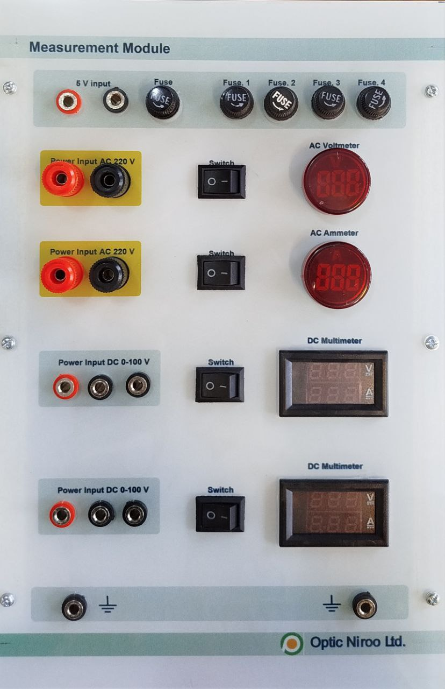

| نام تابلو: تابلو 03: اندازهگیری |
سال ساخت: 2025 |
| دستهبندی: تابلو |
نام شرکت سازنده: اپتیکنیرو - Optic Niroo |
| کشور سازنده: ایران |
تابلو 03 «اندازهگیری Measurements» دربردارنده موارد زیر است:
- 1 عدد ورودی مثبت و منفی 5 V بههمراه فیوز برای تغذیه دستگاههای اندازهگیری
- 1 عدد ولتمتر AC بههمراه کلید و فیوز
- 1 عدد آمپرمتر AC بههمراه کلید و فیوز
- 2 عدد مولتیمتر (ولتمتر و آمپرمتر) DC بههمراه کلید و فیوز
آزمایشهایی که این تابلو در آنها به کار رفته است
- -